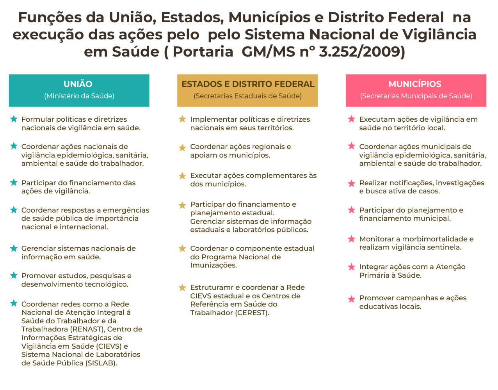

MÓDULO 1 | AULA 3 Sistema Nacional de Vigilância em Saúde
A vigilância em saúde
Segundo o Dicionário Aurélio, a palavra vigiar, do latim vigilare, significa, dentre outros sinônimos, observar atentamente, estar atento a, atentar em. De mesma origem etimológica, a palavra vigilância significa ato ou efeito de vigilar, precaução, cuidado, prevenção etc.
Extrapolando o significado de vigiar para o setor saúde, o termo Vigilância em Saúde (VS) significa:
"um processo contínuo e sistemático de coleta, consolidação, análise de dados e disseminação de informações sobre eventos relacionados à saúde, visando o planejamento e a implementação de medidas de saúde pública, incluindo a regulação, intervenção e atuação em condicionantes e determinantes da saúde, para a proteção e promoção da saúde da população, prevenção e controle de riscos, agravos e doenças"
(Brasil, 2018)
A VS no Brasil é orientada pela Política Nacional de Vigilância em Saúde (PNVS)[AL1.1], criada em 2018, fornecendo subsídios e auxiliando o planejamento e a coordenação das atividades que monitoram a saúde da população, identificam riscos e buscam evitar o surgimento de doenças, agravos e outros problemas de saúde da população.
A VS, conforme disposto na PNVS, tem como princípios: universalidade, integralidade e equidade, a territorialização, a descentralização político-administrativa, a inserção da vigilância na regionalização das ações e serviços de saúde, participação comunitária, a cooperação e articulação intra e intersetorial, garantia do acesso à informação pela população e organização dos serviços evitando a duplicidade de recursos a serem gastos com a mesma finalidade.
Escute a seguir as diretrizes que fundamentam a vigilância em saúde:
A evolução da Política Nacional de Vigilância em Saúde e planejamento são apresentados de maneira aprofundada na aula 2 do módulo 1 deste curso.
Para aprofundar o aprendizado, assista ao vídeo “Vigilância em Saúde - Ligado em Saúde”, disponível no portal da Fiocruz.
A organização do Sistema Nacional de Vigilância em Saúde
Buscando monitorar constantemente os dados de saúde da população em todo o território brasileiro, o Sistema Nacional de Vigilância em Saúde (SNVS) atua de modo articulado e hierarquizado, com a coordenação e execução de ações pelas diferentes esferas de governo. Esse sistema é formado pela Secretaria de Vigilância em Saúde e Ambiente (SVSA), do Ministério da Saúde, pelo Subsistema Nacional de Vigilância Epidemiológica, de doenças transmissíveis e de agravos e doenças não transmissíveis; pelo Subsistema Nacional de Vigilância em Saúde Ambiental, incluindo ambiente de trabalho; pelo Sistema Nacional de Laboratórios de Saúde Pública, relativos à vigilância em saúde; pelos sistemas de informação de vigilância em saúde; pelos programas de prevenção e controle de doenças de importância para a saúde pública, incluindo o Programa Nacional de Imunizações (PNI); pela Política Nacional de Saúde do Trabalhador e da Trabalhadora (PNSTT) e pela Política Nacional de Promoção da Saúde.
Na organização do SNVS, as funções atribuídas a cada esfera estão bem definidas. O Ministério da Saúde, por meio da SVSA, define as políticas nacionais, garante o financiamento das ações de VS e coordena sua realização. Além disso, a esfera nacional lida com problemas que afetam diferentes Estados do país, e atuam de forma complementar aos Estados quando necessário. Os Estados e o Distrito Federal definem políticas regionais, seguindo as diretrizes nacionais e adaptando-as às suas características e especificidades. Cabem aos Estados organizar, coordenar e apoiar complementarmente as ações de VS nos municípios. Já os municípios são aqueles que executam diretamente as ações de VS.

Funções da União, Estados, Municípios e Distrito Federal na gestão do Sistema Nacional de Vigilância em Saúde (Portaria GM/MS nº 3.252/2009)
Tipos de Vigilância em Saúde
A depender do processo adotado para coleta de dados, a Vigilância em Saúde pode ser classificada em passiva, ativa e sentinela.
pan_tool_alt CliqueToque e arraste para passar os cartões
Campo de atuação da Vigilância em Saúde
Como parte do SUS, a VS envolve práticas e processos de trabalho planejados para atingir toda a população brasileira, voltados principalmente para:
- Realizar análises de situação de saúde da população, subsidiando o planejamento, estabelecimento de prioridades e estratégias, monitoramento e avaliação das ações de saúde pública;
- Detectar riscos e adotar medidas de resposta às emergências de saúde pública;
- Prevenir e controlar doenças transmissíveis, doenças crônicas não transmissíveis, acidentes e violências;
- Monitorar os riscos ambientais à saúde humana, os riscos à saúde do trabalhador e da trabalhadora, e os riscos decorrentes da produção e do uso de produtos, serviços e tecnologias de interesse à saúde.
As ações de VS incluem a realização de ações laboratoriais por meio do funcionamento de uma rede laboratorial integrada aos diferentes níveis de atenção aos pacientes, sendo essas, juntamente com a análise de situação de saúde, transversais e essenciais para o processo de trabalho da vigilância.
Assista ao vídeo “Vigilância em Saúde”, e conheça um pouco sobre o serviço de vigilância em saúde e sua importância no planejamento das ações executadas pelo SUS.